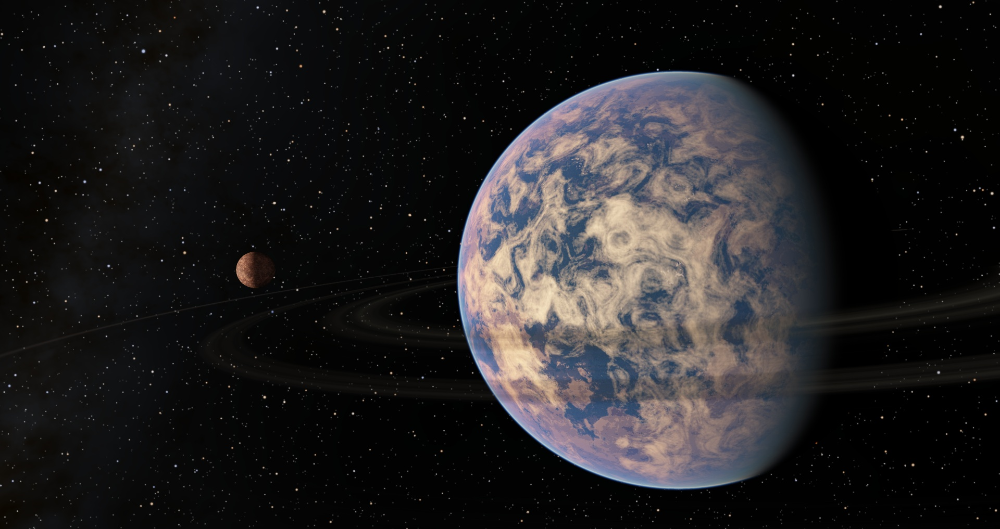
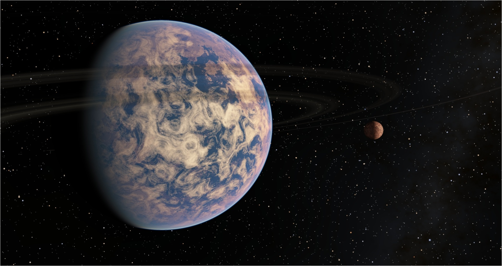
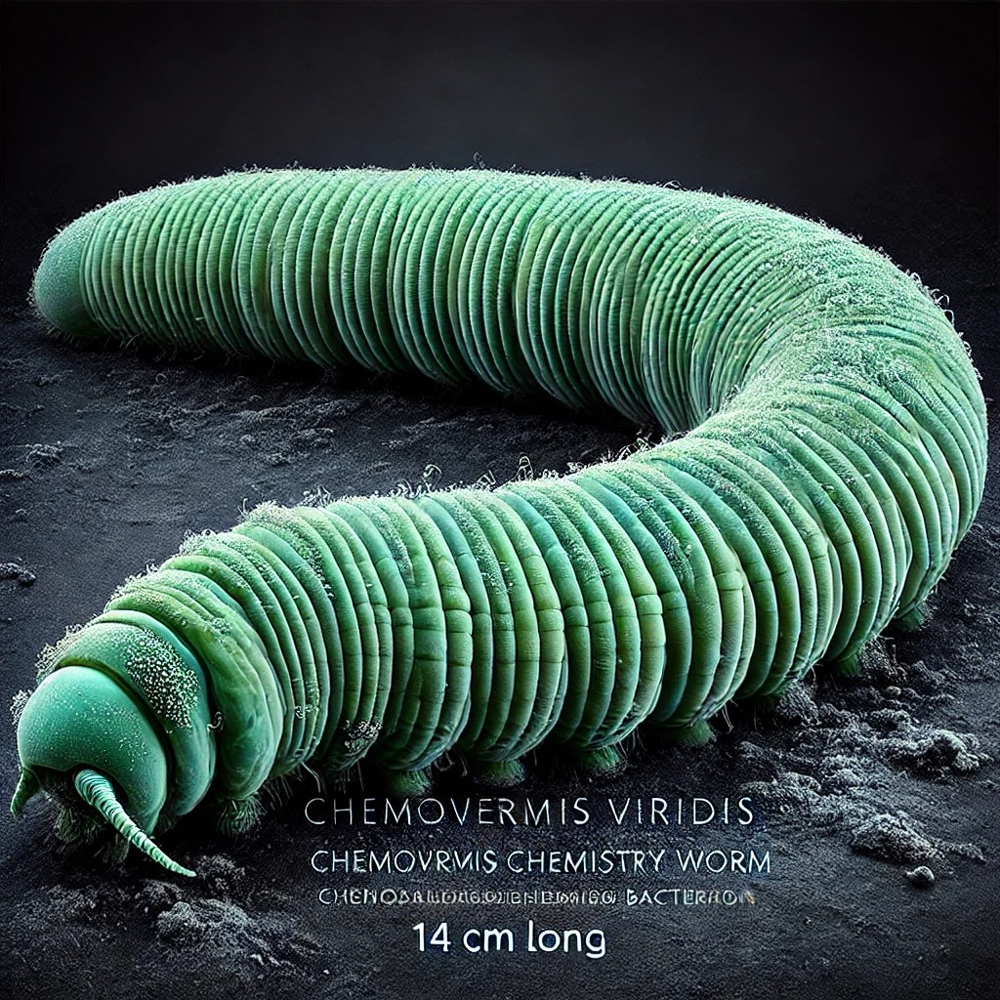
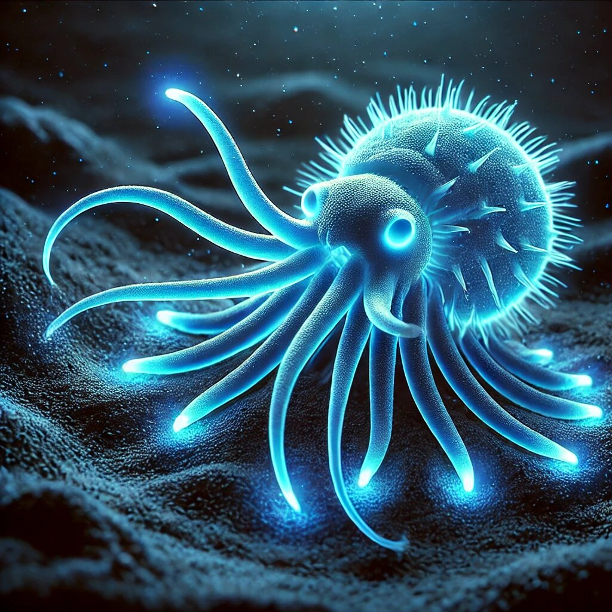
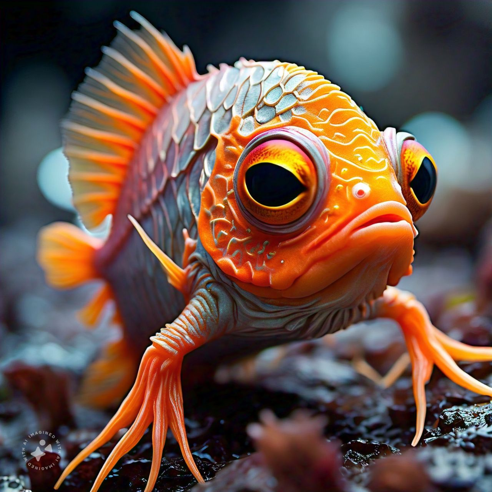
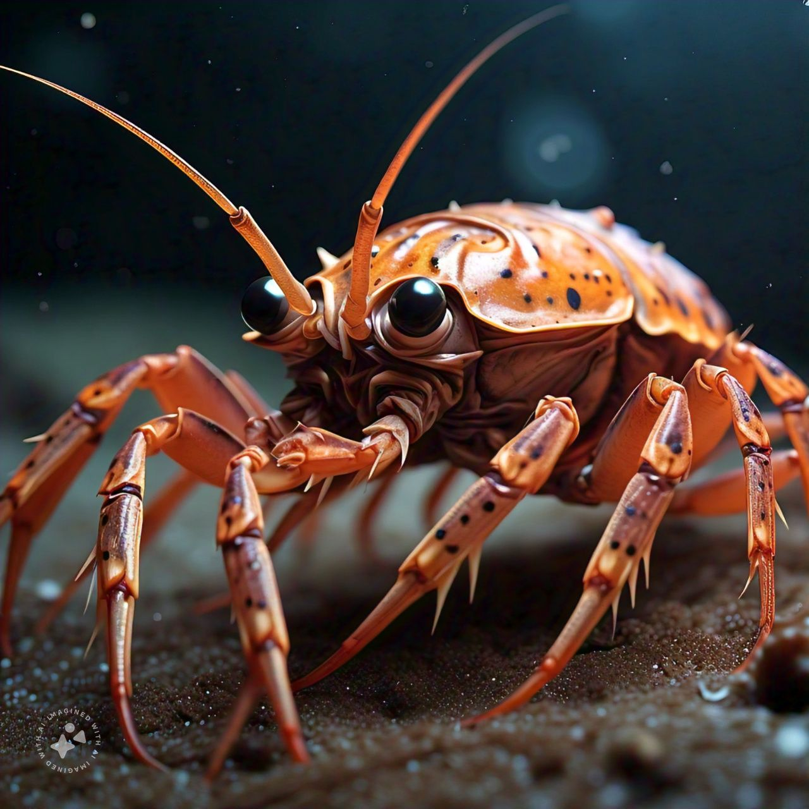
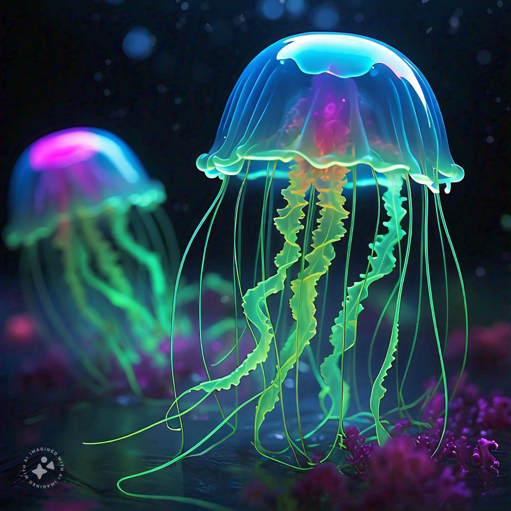
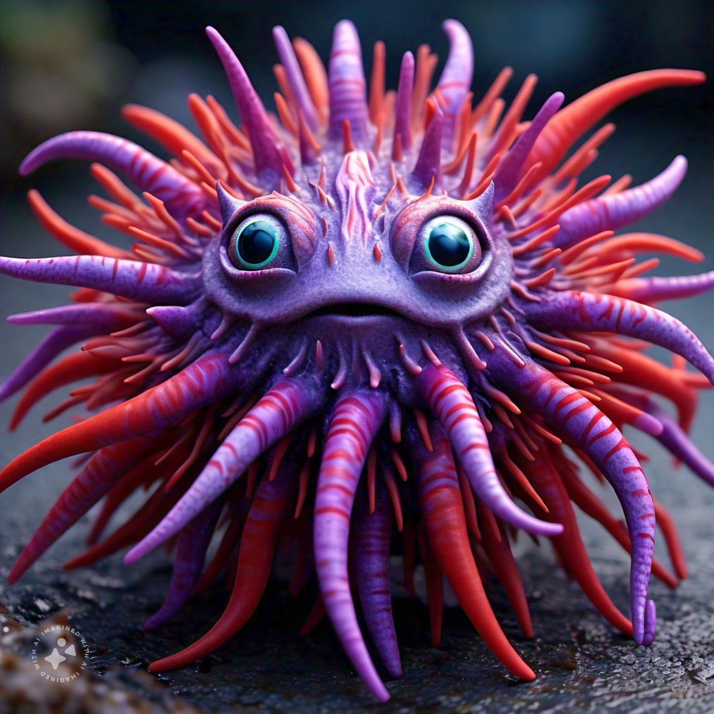
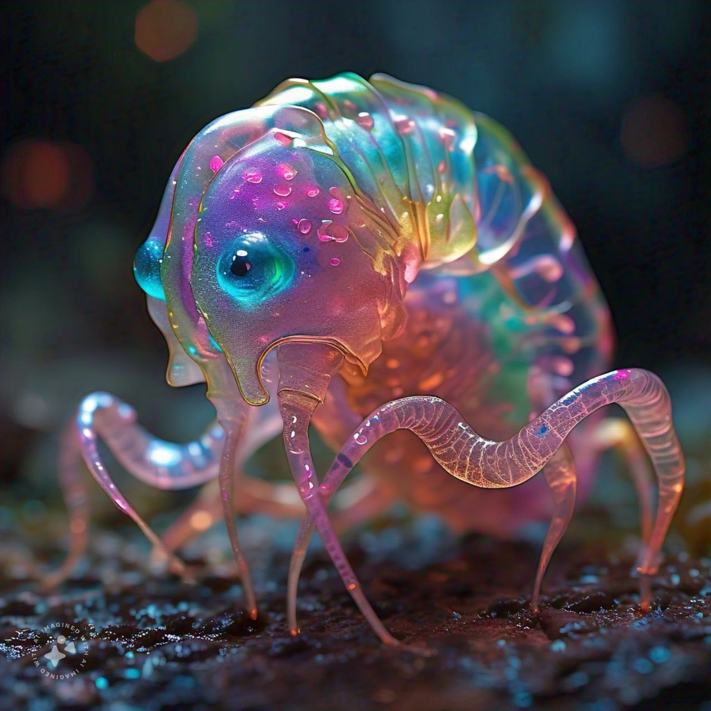

ABYSSALIS
ABYSSALIS
The acuatic planet
General characteristics:

The acuatic planet has a diameter of 10,000 km, with a mass of 70% of Earth's and a gravity of 0.8 times Earth's. It is completely covered by oceans, which contain 1.5 times more water than Earth. The average depth of the ocean is 10 km, reaching up to 25 km in the deepest trenches, where the main sources of chemosynthesis are found.
Its atmosphere is very dense and rich in methane, carbon dioxide, hydrogen sulfide, and nitrogen, which blocks sunlight from entering. All life depends on chemosynthesis, fueled by hydrothermal vents that emit chemical compounds. The temperature varies from 90°C near the sources to about 4°C in the most remote areas. A day on the planet lasts 48 Earth hours and has no marked seasons.
Planet Specimens
This new planet not only has an ecosystem that has never been seen before, but it is also integrated with a completely different way of life than those seen on our planet.






